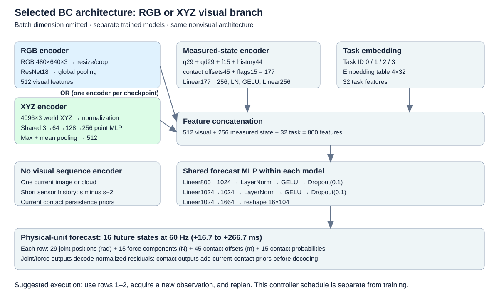
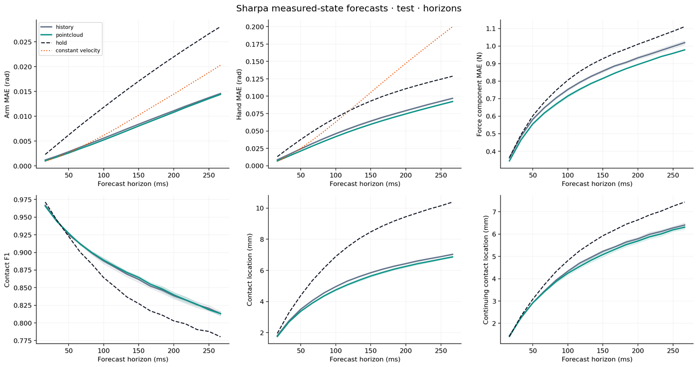

Week 3
Sep 14 – Sep 20, 2026Two results this week, both from the behaviour-cloning (BC) policy trained on the play2perfect assembly demonstrations. Result 1 measures how well the policy predicts fingertip contact and force offline, on held-out recordings. Result 2 runs the same policy closed loop in the simulator through the hybrid force controller, once tracking the predicted states only and once adding the predicted force targets through the force law.
The policy under test
A feed-forward behaviour-cloning network, one model for all four tasks. From one camera observation, the measured robot state and a task ID it predicts a chunk of 16 future measured states: joint positions, fingertip force vectors and contacts. It outputs references for the controller, not motor commands; it was never trained on expert actions.

Result 1Offline force and contact prediction
Given a recorded observation, the policy forecasts the next 267 ms: where every joint will be, which fingertips will be in contact, where on the fingertip, and with what force vector. The overlay video draws the forecast on the recorded camera frame it refers to, red for predicted contact and force, green for the recorded truth. The plot beside it shows the same episode as time series.
Experiment settings
- Policy
- Point-cloud BC checkpoint, seed 0, epoch 27 of 40, 3.7 M parameters. One network for all four tasks. RGB counterpart: ResNet18 encoder, 14.9 M parameters.
- Visual input
- 4,096 XYZ points from one fixed camera at 30 Hz, no colour, no augmentation. RGB model: one 640×480 image.
- State input, 60 Hz
- 29 joint positions (7 arm + 22 hand) · joint velocities and 5 fingertip force vectors, causal EMA · contact flags and locations, 5 fingertips × 3 objects · 33 ms motion and force history · task ID.
- Output per call
- 16 future states at 60 Hz = 267 ms, all in one forward pass: joint positions [16×29], force vectors [16×5×3], contact probability and location per fingertip–object pair. No autoregression.
- 2 steps vs 16 steps
- Rows 2 and 16 of the same forecast, each drawn on the frame it refers to. Not a training difference. Video shows row 2 (33 ms, the first camera frame); plot shows row 1 (17 ms).
- Labels
- Raw joint positions, raw contacts. Force vectors smoothed with centered Savitzky–Golay(7,2), offline only.
- Data
- 200 play2perfect expert demos, 50 per task → 40 train / 5 validation / 5 test per task. Retrospective split: test episodes were training data for an earlier model version.
- Training
- 40 epochs, 3 seeds, AdamW, batch 256, cosine schedule. Loss: L1 joints + L1 force + L1 contact location + weighted contact BCE + 0.2 × motion increment. Checkpoint = lowest validation score.
- Evaluation
- Teacher forced on the 20 test episodes, 3,778 states: every input recorded, nothing executed. Hold = repeat the current state. Overlay: first test episode per task, contact offsets anchored to the recorded fingertips.
- Metrics
- MAE of arm and hand joints, rad · force per XYZ component, N · contact F1 at threshold 0.5 · contact location on true contacts, mm. Pooled over the 16 steps, tasks weighted equally.
How accurate is the forecast?
Three things to take away. Joints: the forecast is good, about 2× better on the arm and 30 % better on the hand than assuming the robot stays still, with 92 mrad hand error at 267 ms. Light contact: contact on and off is predicted well, with 81 % F1 at the full horizon and onsets caught within 50 ms about half the time. Firm grasps: this is the weak spot. Above 5 N the predicted force is 2.7 to 4.5 N too low, roughly a third to a half of the target, so the force targets handed to the controller are too small exactly when the grasp matters. The point-cloud encoder beats RGB on every error by 4 to 7 %.
Numbers behind it
Model comparison: equal-task averages over three training seeds; seed spread is below 1 mrad and 0.01 N. Contact F1 at 267 ms is 0.80, 0.81 and 0.81 respectively. Checkpoints were chosen on validation only.

Per task, screwing is the easiest on every metric and beam assembly step 2 the hardest. Full tables, per-step curves, calibration and paired confidence intervals are in the evaluation package's report.
Result 2Closed-loop rollouts: state tracking with and without the force law
The same point-cloud policy drives the robot in the simulator through the hybrid controller. Two variants start from the bit-identical initial state: A tracks only the predicted joint states, B also tracks the predicted fingertip force targets through the task-space force law. One episode per task is shown; the summary below covers the full evaluation grid.
Experiment settings
- Policy
- Same point-cloud checkpoint as Result 1. Live inputs only; nothing recorded is fed back.
- Simulator
- play2perfect Isaac Lab tasks, KUKA iiwa14 + Sharpa hand, no domain randomisation. 120 Hz physics, 60 Hz state, 30 Hz camera.
- Start
- Environment reset with seed 20002, never in the dataset (collection used 1000 to 1080). A and B restored to the same cached state, bit for bit.
- Loop
- Forecast every 2 states (30 Hz) · execute rows 1 to 2 (33 ms), then re-plan · linear interpolation at 120 Hz · velocity feedforward · targets clamped to joint limits · no smoothing, no ensembling.
- A, state only
- Null law: predicted joint states straight to the PD. Force targets logged, unused.
- B, state + force
- Task-space law at 120 Hz: joint offset toward the predicted force target from the measured tactile force (kp 0.3, ki 10, 20° cone, clip 0.12 rad) + contact-point term.
- End
- Success = all insertion sub-goals + retract. Otherwise 10 s no-progress timeout, 601 frames.
- Video
- Camera left. Right: per fingertip, predicted target dashed vs measured solid, time cursor, live error, object height.
- Shown
- Seed 20002 for tight insertion, beam assembly step 1, screwing: the seed where both variants touch the part. Beam step 2 in the table only.
AState tracking only null law: predicted joint states to the PD
BState + force tracking task-space law: force targets tracked from the tactile pads
Outcome
| shown episode, seed 20002 | variant | result | closest keypoint, mm | peak force on part, N | force-tracking bias, N |
|---|---|---|---|---|---|
| Tight insertion | A, state only | timeout, 0/2 goals | 163 | 5.4 | −0.67 |
| B, state + force | timeout, 0/2 goals | 163 | 5.3 | −0.63 | |
| Beam assembly, step 1 | A, state only | timeout, 0/2 goals | 236 | 7.9 | −0.74 |
| B, state + force | timeout, 0/2 goals | 236 | 10.4 | −1.23 | |
| Screwing | A, state only | timeout, 0/10 goals | 194 | 5.2 | −0.44 |
| B, state + force | timeout, 0/10 goals | 234 | 26.5 | −0.58 |
Closest keypoint = the smallest distance any part keypoint reached to its goal pose during the episode. Force-tracking bias = mean of measured minus target force while a fingertip is engaged, worst fingertip.
| full grid | episodes | successes | sub-goals reached | ended by | closest keypoint, cm | part touched above 2 N |
|---|---|---|---|---|---|---|
| 4 tasks × 5 seeds × {RGB, point cloud} × {A, B} | 80 | 0 | 0 | timeout, 80 of 80 | 15 to 37 | 41 of 80 |
Seeds 20000 to 20004, identical initial states across the four conditions of each seed. With five episodes per cell, the 95 % interval on a 0/5 still reaches 43 %, so the grid cannot rank the conditions; it only shows that none of them works yet.
What the rollouts show. The part is never grasped. Within the first second the object height drops by 8 to 10 cm in every episode: the hand does not close fast enough, the part slips out, and the rest of the episode is spent near the table. Fingers do touch the part in half the episodes, and with the force law on the fingertips press harder on it (screwing above: 27 N against 5 N), but never hold it.
Where the error is. The controller follows the policy's reference closely: 6 mrad mean hand error, under 1 mrad on the arm, and the force law tracks its targets to within 1 N. The reference itself is wrong. From rest the policy under-predicts how fast the hand should close, and once forecasts build on the policy's own states the arm reference drifts 0.18 rad from the recording within 0.65 s. This is closed-loop covariate shift of the BC policy. The offline under-prediction of firm grasps in Result 1 points the same way: the force targets the law is asked to track are themselves too small.
Checks that passed. Replaying the recorded commands through the same live pipeline completes the tasks, and the live policy inputs match the dataset files bit for bit, so the wiring is not the cause. The velocity feedforward halves the arm tracking error but does not change the outcome.